01ภาพรวม

Space Marines ที่หันหลังให้จักรพรรดิ — ทำ 'สงครามอันยาวนาน' (Long War) ต่อจักรวรรดิมาหมื่นปี
02ต้นกำเนิด
มีสองแหล่งกำเนิด: Legion ผู้ทรยศทั้ง 9 ที่ติดตาม Horus ในยุค 30K และหนีเข้า Eye of Terror หลังพ่ายแพ้ กับ Chapter ผู้ทรยศ (Renegade) ในยุคหลัง เช่น Red Corsairs ที่เดิมคือ Astral Claws — เวลาใน Eye of Terror ไหลต่างจากโลกภายนอก ทหารหลายคนจากยุค Heresy จึงยังมีชีวิตอยู่
03เนื้อเรื่องเจาะลึก
The Long War — สงครามหมื่นปี
หลังพ่ายที่ Terra Legion ทรยศถอยเข้า Eye of Terror และต่อสู้กันเองอยู่หลายพันปีใน "Legion Wars" จนหลาย Legion แตกเป็น Warband เล็ก ๆ แต่ทุกกลุ่มมีเป้าหมายเดียวกัน: ทำลายจักรวรรดิที่พวกเขาเห็นว่าเป็น "ศพที่เน่าเปื่อย" และแก้แค้นจักรพรรดิ
Renegades — ผู้ทรยศรุ่นใหม่
นอกจาก Legion เก่า ยังมี Chapter ภักดีที่ทรยศภายหลังเข้าร่วม Chaos เช่น Red Corsairs จาก Badab War หรือ Chapter จาก Cursed Founding — พวกเขามักถูก Legion เก่าดูถูกว่าเป็น "มือใหม่"
หลัง Great Rift
การเปิด Great Rift ทำให้ Warp รั่วไหลไปทั่วกาแล็กซี Chaos Space Marines บุกออกมาได้ง่ายกว่าที่เคย และ Daemon Primarch หลายองค์กลับมามีบทบาทอีกครั้ง
04ยุค 30K — ในยุค Great Crusade และ Horus Heresy

ในยุค 30K พวกเขาคือ Legion ที่รบเคียงข้างผู้ภักดีมาตลอด Great Crusade — ดูเรื่องราวแต่ละ Legion สมัยยังภักดีที่ ยุค 30K
ดูภาพรวมยุค 30K ทั้งหมดที่ เนื้อเรื่องยุค 30K และความต่างของสองยุคที่ เปรียบเทียบ 30K vs 40K
05นิสัยและวัฒนธรรม
- บางคนบูชาเทพองค์เดียว บางคนบูชาทั้งสี่ (Chaos Undivided) บางคนแค่ใช้ Chaos เป็นเครื่องมือ
- แตกเป็น Warband ที่แย่งชิงอำนาจกันเอง — มีเพียงผู้นำที่แข็งแกร่งอย่าง Abaddon ที่รวมได้
- ร่างกายกลายพันธุ์ ชุดเกราะผสานกับเนื้อหนัง ได้รับ 'พร' จากเทพเจ้า
- ผู้ที่ได้รับพรมากพอจะกลายเป็น Daemon Prince — ผู้ล้มเหลวกลายเป็น Chaos Spawn
06จุดที่น่าสนใจ
- Black Crusade: การบุกใหญ่ที่รวมกองกำลัง Chaos นับไม่ถ้วน — Abaddon ทำมาแล้ว 13 ครั้ง
- ทหารผู้ทรยศบางคนมีชีวิตมาตั้งแต่ยุค Horus Heresy
07ความสามารถพิเศษ
สิ่งที่ทำให้ Chaos Space Marines แตกต่างจากทัพอื่น — ทั้งพลังที่ติดตัวมาทั้งเผ่า/ทัพ และความสามารถของบุคคลสำคัญ
ของทั้งเผ่า/ทัพ
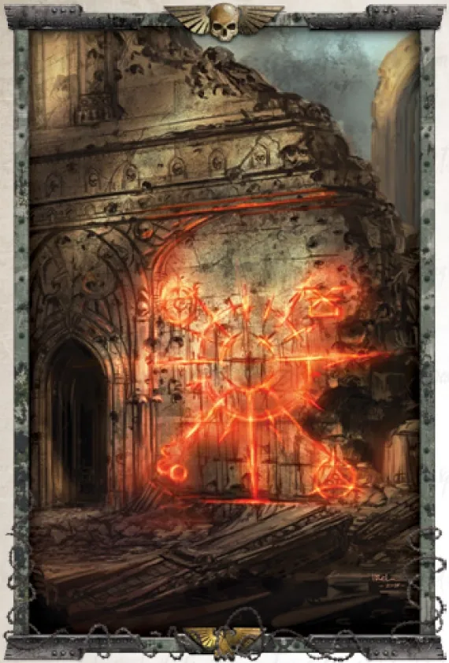
ของขวัญจากเทพ (Mark of Chaos)
เทพ Chaos ตอบแทนผู้ติดตามด้วย "Mark" และการกลายพันธุ์ — ผิวหนังแข็งเป็นเกราะ แขนกลายเป็นหนวดหรือกรงเล็บ ตาเพิ่ม เขางอก พรบางอย่างเป็นพลัง บางอย่างเป็นคำสาป
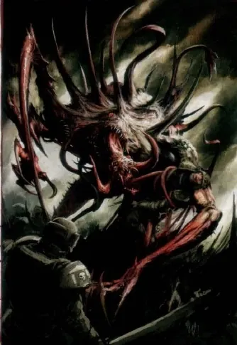
Daemon Prince หรือ Chaos Spawn
ปลายทางของ Chaos Champion มีสองทาง: ได้รับการเลื่อนขั้นเป็น Daemon Prince อมตะ หรือถูกของขวัญมากเกินไปจนกลายเป็น Chaos Spawn ก้อนเนื้อไร้สติ — ไม่มีทางอื่น

เวลาใน Warp ไม่เท่ากัน
ใน Eye of Terror เวลาไหลผิดปกติ ทหารหลายคนที่เคยรบใน Horus Heresy ยังมีชีวิตอยู่ ผ่านไปหมื่นปีในจักรวรรดิแต่สำหรับพวกเขาอาจแค่ไม่กี่ร้อยปี — ความแค้นยังสดใหม่
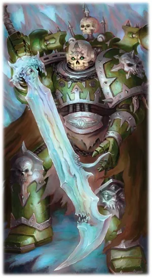
อาวุธปีศาจ (Daemon Weapon)
ผูกปีศาจไว้ในดาบหรือขวาน ทำให้อาวุธมีพลังมหาศาลและมีความต้องการของตัวเอง ผู้ถือต้องสู้กับปีศาจในอาวุธไม่ให้มันเข้าควบคุม
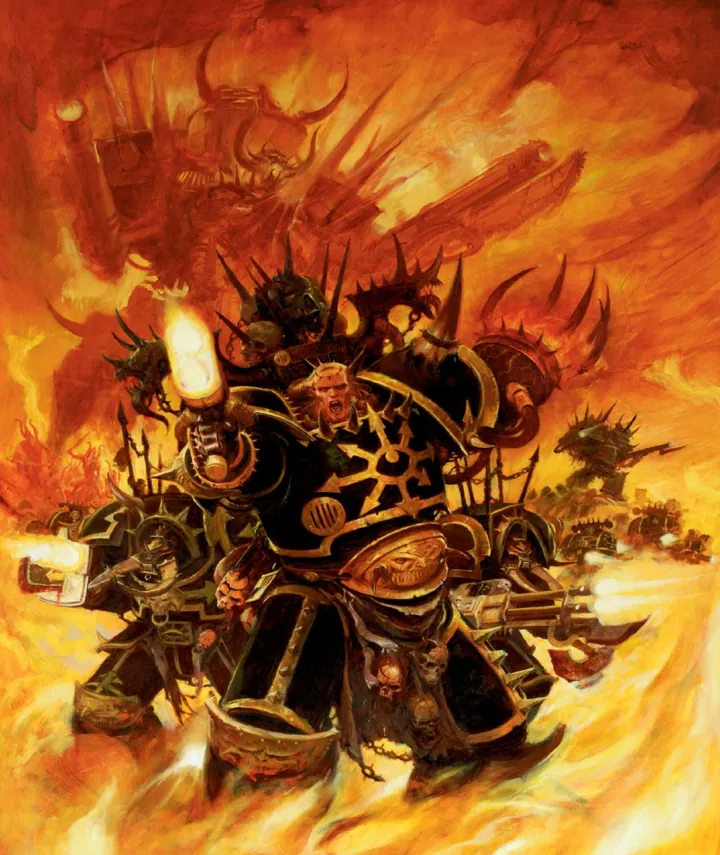
Heretic Astartes ยังคงเป็น Space Marine
ยังมีอวัยวะทั้ง 19 ชิ้น เกราะ Power Armour และทักษะการรบหมื่นปี — แต่ไม่มี Codex ไม่มีวินัยกลาง และมักแย่งชิงกันเอง
ของบุคคลสำคัญ

Abaddon the Despoiler
Warmaster ที่ไม่ก้มหัวให้เทพใดผู้สืบทอดของ Horus ถือ Drach'nyen ดาบปีศาจที่เกิดจากเสียงสะท้อนของการฆาตกรรมครั้งแรก และ Talon of Horus กรงเล็บของบิดาเขา นำ Black Crusade 13 ครั้ง ทำลาย Cadia จนเกิด Great Rift

Fabius Bile
หมอผู้สร้างมนุษย์ใหม่ใช้ร่างโคลนของตัวเองต่อชีวิตมาหมื่นปี ถือ Rod of Torment และ "Chirurgeon" แขนกลผ่าตัดบนหลัง ขายบริการเสริมพลังให้ทุกฝ่าย

Huron Blackheart
Tyrant of Badabอดีต Chapter Master ภักดีที่กลายเป็นหัวหน้าโจรสลัด Red Corsairs ร่างครึ่งหนึ่งเป็นเครื่องจักรหลังถูกทำร้ายสาหัส
08หน่วยและบทบาทในกองทัพ
Chaos Space Marines ไม่มีโครงสร้างตายตัวแบบ Codex — กองทัพ (Warband) รวมตัวกันรอบผู้นำที่แข็งแกร่งที่สุด และมีตำแหน่งที่บิดเบี้ยวมาจาก Legion เดิม เช่น "ช่าง" กลายเป็นผู้ผูกปีศาจเข้ากับเครื่องจักร
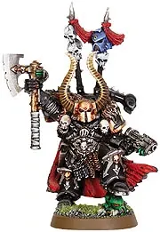
Chaos Lord
เคออสลอร์ดผู้นำ Warband ขึ้นมาด้วยพลังและความโหดร้าย หวังได้รับพรจากเทพ Chaos จนกลายเป็น Daemon Prince (หรือกลายเป็น Chaos Spawn ถ้าล้มเหลว)
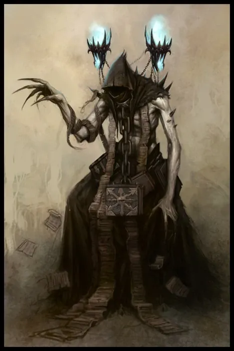
Sorcerer
ซอร์เซอเรอร์อดีต Librarian ที่หันไปใช้เวทมนตร์ Chaos แลกความรู้กับปีศาจ ทรงพลังแต่เสี่ยงถูกกลืนกิน

Dark Apostle
ดาร์กอะพอสเซิลนักบวชของ Chaos (มาจาก Chaplain ของ Word Bearers เป็นหลัก) เทศนาพระวจนะของเทพมืด ปลุกระดมลัทธิผู้บูชา และทำพิธีสังเวย
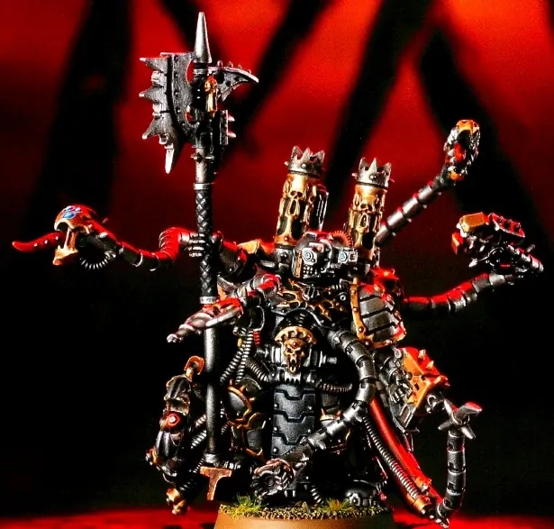
Warpsmith
วาร์ปสมิธ"ช่าง" ของ Chaos — อดีต Techmarine ที่เรียนรู้วิธีผูกปีศาจเข้ากับเครื่องจักร (Daemon Engine) และซ่อมเครื่องด้วยเวทมนตร์
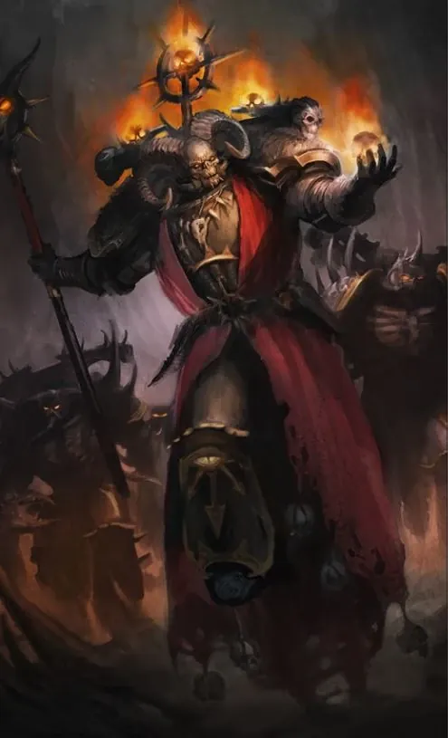
Master of Possession
มาสเตอร์ออฟโพสเซสชันพ่อมดผู้เชี่ยวชาญการเรียกปีศาจเข้าสิงร่างพี่น้อง เพื่อสร้างหน่วย Possessed
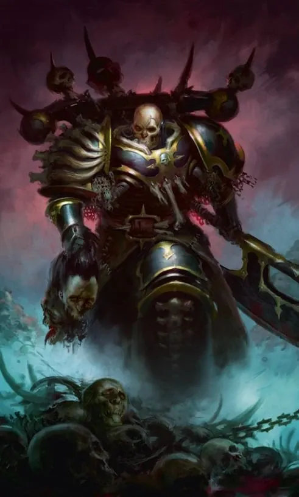
Master of Executions
มาสเตอร์ออฟเอ็กซ์ซีคิวชันเพชฌฆาตที่ล่าหัวผู้นำศัตรูเพื่อเป็นเครื่องบรรณาการแด่ Chaos
Fabius Bile (Chirurgeon)
ฟาเบียส ไบล์ไม่มี "หมอ" แบบ Apothecary ตามปกติ แต่มี Fabius Bile อดีต Apothecary ของ Emperor's Children ที่ทดลองพันธุกรรมจนเป็นหมอบ้าผู้โด่งดังที่สุดของ Chaos
Legionaries
ลีเจียนแนรีทหารหลักที่ยังคงเป็นทหารผ่านศึกจากสงครามหมื่นปี (Long War) หรือทหารใหม่ที่ถูกลักพามา
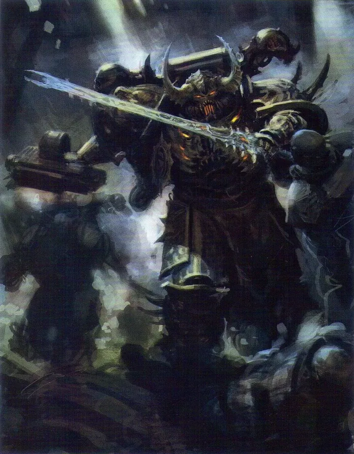
Chosen
โชเซนนักรบคนสนิทของ Chaos Lord ซึ่งแต่ละคนก็หวังจะชิงตำแหน่งผู้นำในวันหนึ่ง
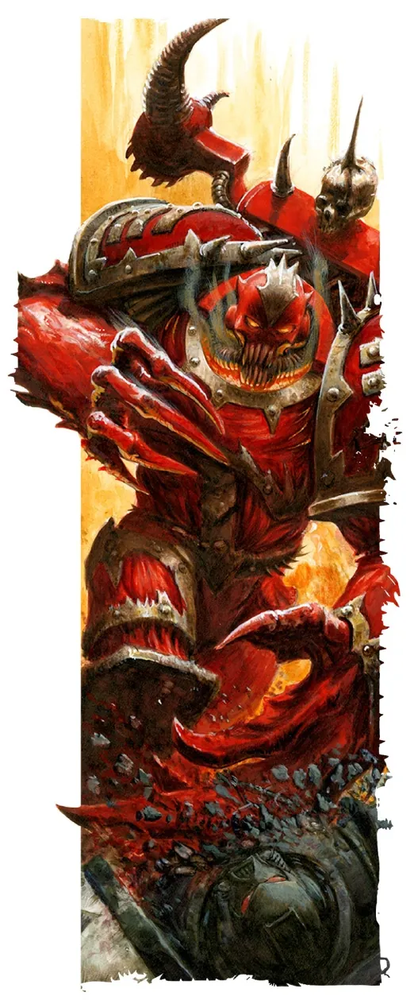
Possessed
โพสเซสด์Marine ที่ยอมให้ปีศาจเข้าสิงร่าง ร่างกายกลายพันธุ์เป็นเขี้ยว หนวด และกรงเล็บ
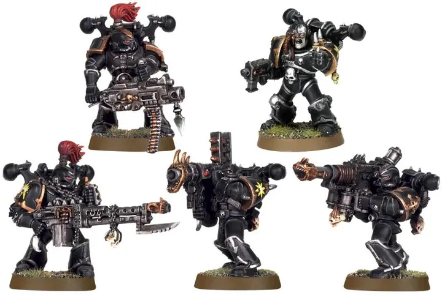
Havocs / Raptors
ฮาวอค / แร็ปเตอร์Havocs คือหน่วยอาวุธหนัก (เทียบ Devastator) ส่วน Raptors คือหน่วย Jump Pack (เทียบ Assault)

Cultists
คัลทิสต์มนุษย์ผู้บูชา Chaos ถูกใช้เป็นเหยื่อกระสุนนับพัน
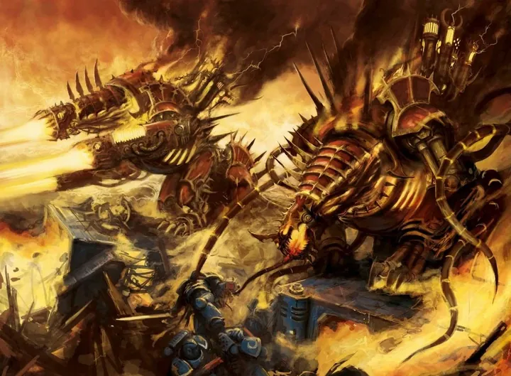
Daemon Engine
เดมอนเอนจินเครื่องจักรที่มีปีศาจสิงอยู่ เช่น Defiler, Forgefiend, Heldrake — มีชีวิตและกระหายการฆ่า
09วีรกรรมและเหตุการณ์สำคัญ
Horus Heresy
ทรยศและพ่ายแพ้ที่ Terra
Black Crusade ครั้งแรก
Abaddon นำทัพบุก Cadian Gate เป็นครั้งแรก
13th Black Crusade
ทำลาย Cadia และเปิด Great Rift
Arks of Omen
Abaddon ร่วมกับ Vashtorr รุกเข้า Imperium
10ตัวละครสำคัญ
Abaddon the Despoiler
Warmaster แห่ง Chaosผู้นำ Black Legion ที่ทำให้ Cadia ล่มสลาย
Huron Blackheart
ผู้นำ Red Corsairsอดีต Chapter Master ที่ทรยศใน Badab War

Vashtorr the Arkifane
Daemon Prince แห่งเตาหลอมผู้วางแผนเหตุการณ์ Arks of Omen
11ยุค 40K — สหัสวรรษที่ 41
ในยุค 40K Chaos Space Marines ออกจาก Eye of Terror และ Maelstrom มาปล้นสะดมและพิชิตดาว บางกลุ่มเป็นโจรสลัด บางกลุ่มเป็นกองทัพศาสนา
12เนื้อเรื่องล่าสุด (Era Indomitus / M42)
หลังการเกิด Great Rift พวกเขาแข็งแกร่งที่สุดนับตั้งแต่ Heresy Abaddon ประกาศตัวเป็น Warmaster ของ Imperium Nihilus และเดินหน้าบน 'Crimson Path' สู่ Terra ขณะที่ Daemon Primarch หลายคนกลับมาปรากฏตัว
หลังการเกิด Great Rift ปฏิทินของจักรวรรดิคลาดเคลื่อน เหตุการณ์ยุคปัจจุบันจึงมักระบุเพียง 'M42' ไม่มีปีที่แน่นอน
13แกลเลอรี


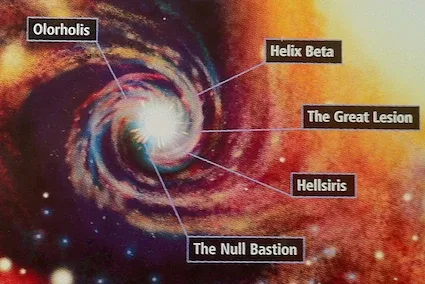